Chapter 1 Simple linear regression
In statistics, regression models are those that relate the distribution of an output variable to the value(s) of one or several input variables. Characterizing the relationships among input and output variables is central to much of science, and indeed regression methods form the foundation for much of data analysis. We’ll have a lot to say about regression, but we’ll begin with so-called simple linear regression (SLR). SLR models are “simple” in the sense that they contain only one predictor. In ST 512, we assume that you have encountered SLR models before. The purpose of our study here is twofold. First, we hope to understand the SLR model at a reasonably deep level. Much of this understanding will carry over to our study of more complicated models, so it is helpful to establish it here in a less complicated setting. Second, we will review many of the foundational concepts of (frequentist) statistical inference. While this should not be your first exposure to these ideas, it’s worth our time to review them again to solidify our understanding.
1.1 The basics of SLR
Simple linear regression characterizes the relationship between two variables: a predictor variable and a response variable. We will begin with a simple example for context.
Example: Individuals in this study consumed a certain number of beers, and their blood alcohol content (BAC) was measured. Data were obtained for \(n=16\) individuals. Here is a scatter plot of the data:
Figure 1.1: BAC vs. beers consumed.
To begin, let’s observe that the two variables that a regression model associates are not on equal footing. One variable is designated as the “predictor” and the other variable is designated as the “response.” The predictor variable is denoted by the symbol \(x\), and the response variable is denoted by \(y\). In plotting, we almost always show the predictor on the horizontal axis and the response on the vertical axis.2 The predictor is also called the “independent” variable because, in a designed experiment, its values are determined by the investigator. The response is also called the “dependent” variable because its distribution depends on the value of the predictor variable, in a way that is determined by nature. For the BAC data, we will identify the number of beers consumed as the predictor and BAC as the response.
The regression model associates each value of the predictor variable with a distribution for the response variable. Indeed, the fact that the output of the model is a distribution is what makes this a statistical model, as opposed to some other flavor of mathematical model. A simple linear regression (SLR) is a simple statistical model in which the association between the value of the predictor and the distribution of the response takes a specific form. In particular, in a SLR, the distribution of the response variable is Gaussian (or normal) with a mean that depends linearly on the value of the predictor and a variance that is independent of the value of the predictor. When we plot the fit of a regression model, we typically only plot the regression line. However, the line merely shows how the average of the distribution of the response depends on the predictor. The model has more structure than a plot of the regression line suggests.
In terms of an equation, we can write the model using the regression equation \[\begin{equation} y_i =\beta_0 +\beta_1 x_i +\varepsilon_i \tag{1.1}. \end{equation}\] In words, we might re-write the equation as \[ \mbox{response = intercept + slope} \times \mbox{predictor + error}. \] In the mathematical equation above, the i subscript distinguishes individual data points. For example, \(y_1\) is the value of the response associated with the first observation in the data set. Usually, we use the notation \(n\) for the total number of data points, and so to be precise we might also write \(i = 1, \ldots, n\). In words, we say that “\(i\) varies from 1 to \(n\)” or “\(i\) ranges from 1 to \(n\).” We’ll suppress the \(i\) subscript when we don’t need it.
In the SLR model, the equation \(\beta_0 + \beta_1 x\) shows how the average of the response depends on the predictor value. The parameter \(\beta_0\) is called the intercept, and it gives the value of the regression line when the predictor \(x = 0\). As we will see, the value of the regression line at \(x=0\) often isn’t a scientifically meaningful quantity, even though we need to know the value to specify the model fully. The parameter \(\beta_1\) is the slope. In SLR, the slope is a parameter tells us by how much regression line rises or falls as the predictor changes. Positive values of the slope indicate that the regression line increases as the predictor increases, and negative values of the slope indicate that the regression line decreases as the predictor increases.
The regression line alone is not sufficient to fully specify the entire regression model. To the regression line we add a normally distributed error, denoted by \(\varepsilon\). The error term is a catch-all that subsumes all the other factors that might influence the response that are not included in the predictors. In the context of the BAC example, these might include body weight, metabolism, and/or alcohol content of the beer (if it differed among subjects).
Although they look similar, it is important to realize that \(\beta_0\), \(\beta_1\), and \(\varepsilon\) are different beasts. The quantities \(\beta_0\) and \(\beta_1\) are parameters. Recall that in statistics, parameters are quantities that characterize a population. We assume that true values of \(\beta_0\) and \(\beta_1\) exist; those values are just unknown to us. We will estimate these parameters and draw inferences about their values on the basis of data.
In contrast, the error term \(\varepsilon\) is a random variable. It does not have one single value, but instead takes a different value for every member of a population. We describe the distribution of the errors across the members of the population using a probability distribution. In simple linear regression, we assume that the random errors have a Gaussian (or normal, or bell-shaped) distribution with mean 0 and variance \(\sigma_{\varepsilon}^{2}\). We also assume that the random errors are independent among individuals in our sample. A succinct way of stating this is to state that the errors are Gaussian and “independent and identically distributed” (abbreviated “iid”). In notation, we write \(\varepsilon_{i} \stackrel{\text{iid}}{\sim} \mathcal{N}\left(0, \sigma_{\varepsilon }^2 \right)\), a statement which we would read as “the errors have a normal (or Gaussian) distribution with mean 0 and variance \(\sigma^2_\varepsilon\).” The error variance \(\sigma_{\varepsilon }^2\) is a parameter, and it measure of the variability in the response that is not explained by the predictor. We will also discuss how to estimate \(\sigma_{\varepsilon }^2\). (It is also possible to draw statistical inferences for \(\sigma_{\varepsilon }^2\), although we will not discuss how to do so in ST512.)
Before moving on to discussing how to estimate the model parameters, let’s reflect a bit on the slope, \(\beta_1\), because this is the parameter that captures the linear association between the two variables. I recently learned of a particularly nice way to interpret the slope, due to Gelman, Hill, and Vehtari (2020). Their interpretation works like this. Consider two values of the response \(y_1\) and \(y_2\), associated respectively with two values of the predictor \(x_1\) and \(x_2\). The regression model says that, on average, the difference \(y_1 - y_2\) will equal \(\beta_1 \times (x_1 - x_2)\). The “on average” part of this interpretation is important because we realize that any two actual observations will also include their respective errors, and so we don’t expect these two observations to differ by exactly \(\beta_1 \times (x_1 - x_2)\). Second, this interpretation also makes it clear that the regression model predicts that the average difference between two responses will increase or decrease linearly as the difference between their two associated predictor values grows or shrinks. Thus, if the SLR model is appropriate for the BAC data (something we have yet to verify), then the model suggests that the average BAC difference between two individuals who have consumed 1 vs. 2 beers is the same as the average BAC difference between two individuals who have consumed 4 vs. 5 beers, and that both of these differences are one-half as big as the average BAC difference between two individuals who have drank 2.5 vs. 4.5 beers.
Our assumption of normally distributed errors has a deeper justification than may meet the eye. If you’ve studied probability, you may have encountered an important result called the Central Limit Theorem. For our purposes, the Central Limit Theorem tells us that if the error results from the combined effect of many small factors added together, then the error’s distribution will be approximately normal. (We will see that regression models are not sensitive to moderate departures from normality, so approximately normal errors are good enough.) This result provides a strong justification for expecting normally distributed errors in many cases. The normality assumption begins to break down when the errors are dominated by only a few factors, or when the factors that contribute to the error combine multiplicitavely. This latter scenario — errors that result from the product of many small influences as opposed to their sum — frequently arises in biology when the response measures some form of population size. Populations grow or shrink multiplicitavely, and so population sizes tend to have right-skewed distributions.
We might also note that the style of writing the regression model as the sum of the regression line (\(\beta_0 + \beta_1 x\)) and an error term with mean zero (\(\varepsilon\)) works because we have assumed that the errors have a normal distribution. A normal distribution has the special property that we can take a normally distributed quantity, add a constant to it, and the sum will still have a normal distribution. Most statistical distributions do not have this property; for example, a Poisson random variate plus a non-zero constant does not yield a Poisson distributed sum. Some authors find it more natural to write the SLR model as \(y \sim \mathcal{N}(\beta_0 + \beta_1 x, \sigma^2)\), to emphasize that the response has a Gaussian distribution and that the predictor only affects the mean of this distribution. We will use the style of eq. (1.1), because this style lends itself more readily to mixed-effects models with multiple variance terms. However, the two styles of notation denote the same model. Feel free to use whichever style makes the most sense to you.
1.2 Least-squares estimation
The parameters of an SLR model are estimated by the method of least-squares. That is, we find the values of the parameters that minimize the sum of the squared differences between the data points themselves and the line. The estimates are denoted by “hats,” i.e., \(\hat{\beta}_0\) is the estimate of \(\beta_0\). Other authors use \(b\)’s instead of \(\widehat{\beta}\)’s for parameter estimates in regression. Both types of notation commonly appear in the scientific literature.
If we were inventing SLR from scratch, we might imagine many possible criteria that we could use to determine the parameter values that provide the best fit of the SLR model. For example, we might contemplate fitting the line that minimized the average absolute difference between the data points and the line. The reason why we favor the least-squares criterion is a direct consequence of the assumption that the errors take a Gaussian distribution.3
In ST511 or a similar course, you may have derived formulas for calculating the least-squares estimates \(\hat{\beta}_1\) and \(\hat{\beta}_1\) by hand. In ST512, we will use a computer, although one might note that one could derive the formulas for \(\hat{\beta}_0\) and \(\hat{\beta}_1\) by using basic calculus tools to minimize the error sum-of squares. Using R, we obtain the least-squares fit of the regression model to the BAC data below.4
fm1 <- with(beer, lm(BAC ~ Beers))
summary(fm1)##
## Call:
## lm(formula = BAC ~ Beers)
##
## Residuals:
## Min 1Q Median 3Q Max
## -0.027118 -0.017350 0.001773 0.008623 0.041027
##
## Coefficients:
## Estimate Std. Error t value Pr(>|t|)
## (Intercept) -0.012701 0.012638 -1.005 0.332
## Beers 0.017964 0.002402 7.480 2.97e-06 ***
## ---
## Signif. codes: 0 '***' 0.001 '**' 0.01 '*' 0.05 '.' 0.1 ' ' 1
##
## Residual standard error: 0.02044 on 14 degrees of freedom
## Multiple R-squared: 0.7998, Adjusted R-squared: 0.7855
## F-statistic: 55.94 on 1 and 14 DF, p-value: 2.969e-06The least-squares estimates of the intercept and slope for the BAC data are \(\hat{\beta}_0 = -0.013\) and \(\hat{\beta}_1 = 0.018\), respectively. Here’s a picture of the scatter-plot with the least-squares line:
with(beer, plot(BAC ~ Beers, xlab = "beers consumed"))
abline(fm1)
Figure 1.2: SLR fit of BAC vs. beers consumed.
Thus, the best fitting line predicts a positive relationship between BAC and beers consumed. Using the interpretation that we introduced in the previous section, we would say that if we measure the BAC of two people, one of whom has consumed one more beer than the other, on average the BAC of the person who drank more beers will be 0.018 higher than the BAC of the persion who drank fewer beers. Similarly, if we compare the BAC of two people, one of whom drank four more beers than the other, on average the BAC of the person who drank more beers will be \(0.4 \times 0.018 = 0.072\) higher than the person who drank fewer beers, and so on.
Evaluating the fitted regression line for a given value of the predictor generates a fitted value for each data point. Fitted values are denoted \(\hat{y}_i\). In notation, \(\hat{y}_i = \hat{\beta}_0 + \hat{\beta}_1 x_i\).
Why did the error term vanish in the equation for \(\hat{y}_i\)?
The residual for observation \(i\), denoted \(e_i\), is the difference between the actual observation and the fitted value. In notation, \(e_i = y_i -\hat{y}_i\). In terms of the data plot, the residuals can be thought of as the vertical differences between the actual data points and the fitted line. In the figure below, the vertical line represents the residual for the individual who consumed 9 beers.

Example: The first individual in the data set drank \(x_1 = 5\) beers and had a BAC of \(y_1 = 0.1\). Find \(\widehat{y_1}\) and \(e_1\). Answer: \(\widehat{y_1} = 0.077\), \(e_1 = 0.023\).
The error sum of squares (SSE) is \[ SSE = \sum_{i=1}^{n} e_i^{2} = \sum_{i=1}^{n} \left(y_{i} - \hat{y}_i \right)^{2}. \] The SSE is a measure of the unexplained variability in the data. The least squares estimates, \(\hat{\beta}_0\) and \(\hat{\beta}_1\), are called the least squares estimates because they minimize the SSE.
We can use the SSE to find an estimate of the error variance parameter by using the formula \[ \widehat{\sigma}_\varepsilon^2 = s_\varepsilon^2 = \dfrac{SSE}{n-2} = MSE \] The above is also known as the mean squared error (MSE).
Actually, it is more common to talk about the error standard deviation, \(\sigma _{\varepsilon}\), which is estimated by the residual standard deviation \(s_{\varepsilon}\): \[ s_{\varepsilon} =\sqrt{\dfrac{SSE}{n-2}} = \sqrt{MSE} \] Note that we divide by \(n - 2\) because there are \(n - 2\) degrees of freedom (df) associated with the SSE. For the BAC data, \(s_{\varepsilon} = 0.020\).
1.3 Inference for the slope
To draw statistical inferences about the slope parameter \(\beta_1\), we make the following assumptions:
Linearity: The population mean \(\mu \left(x\right)\) is a linear function of \(x\).
Equal variance (“homoscedasticity”): The variance of the error terms (the \(\varepsilon_i\)’s) is the same for all observations.
Independence: The error terms are independent of one another.
Normality. The errors have a normal (i.e., bell-shaped, or Gaussian) distribution.
Note that assumption number 1 deals with the mean component of the model, while assumptions 2–4 deal with the error component of the model.
1.3.1 Standard errors
As intelligent scientists, we realize that estimates are not exactly equal to the parameters that they seek to estimate. We can characterize the uncertainty in parameter estimates in different ways. One tool that we have for quantifying uncertainty in parameter estimates is to calculate a standard error. In general, a standard error quantifies the variability in an estimate that is attributable to random sampling. Most parameter estimates that we will encounter have known formulas for their standard errors. In most cases, these formulas are complicated, and we will rely on computers to calculate standard errors for us. However, the formula for the standard error of the slope parameter in SLR is interesting to examine because it contains a valuable insight that we can use when collecting data for a regression study. The standard error of \(\hat{\beta}_1\), denoted \(s_{\hat{\beta}_1}\), is given by the formula \[ s_{\hat{\beta}_1} = \dfrac{s_{\varepsilon}}{\sqrt{S_{xx} } } \] where \(S_{xx} =\sum_{i}\left(x_{i} -\bar{x}\right)^2\) quantifies the dispersion in the predictor variables.
Although this formula looks a bit daunting, there’s some intuition to be gained here, and a lesson for experimental design. Suppose we had designed a regression experiment in which all of the individuals were assigned similar values of the predictor. In this case, \(S_{xx}\) would be small, and consequently the standard error \(s_{\hat{\beta}_1}\) would be large. Conversely, if the values of the predictor were very different among individuals in the study, then \(S_{xx}\) would be large and the standard error \(s_{\hat{\beta}_1}\) would be small. Thus, if we want a precise estimate of the slope, we should choose predictor values that span the range over which we want to learn.
Thought question: Following this line of reasoning, is it a good idea to design a study so that half the individuals are assigned a very large value of the predictor, and the other half are assigned a very small value? Why or why not?
For the BAC example, \(s_{\hat{\beta}_1} = 0.0024\).
1.3.2 Confidence intervals
A second way in which we can measure the uncertainty in a parameter estimate is to calculate a confidence interval (CI). Recall that the general formula for a confidence interval associated with a statistic is: \[ \mathrm{estimate} \pm \mathrm{critical\ value} \times \mathrm{standard\ error} \] Critical values are found either by consulting a table (and re-living the good old days) or using the internet or a computer program. Critical values depend on the {} that you want to associate with the CI. Although it seems a bit backwards, we typically denote the confidence level of a CI as \(100 \times \left(1-\alpha \right)\%\). Thus, for a 95% confidence interval (a common choice), \(\alpha = 0.05\). Alternatively, we might seek a 99% CI, in which case \(\alpha = 0.01\).
To construct a CI for \(\beta_1\) , we find the appropriate critical values from a \(t\)-distribution with \(n - 2\) df. For a \(100\times \left(1-\alpha \right)\%\) CI, the critical value is the value that ``cuts-off’’ an upper tail of \(\alpha / 2\) %. For example, to calculate a 99% CI for \(\beta_{1}\), we need to find the critical value of a \(t\)-distribution with 14 df that cuts-off an upper 0.5%-tail. Using an online calculator, or another tool, we find that this critical value is 2.977. Thus, a 99% CI is 0.018 \(\pm\) 2.977 \(\times\) 0.0024 = (0.011, 0.025).
Recall that the appropriate interpretation of the confidence level a CI is fairly tricky. A proper interpretation is that, if we were to repeat this experiment a large number of times, and calculate a 99% CI for each experiment, in the long run 99% of those CIs would contain the true value of \(\beta_1\). Of course, in real life, we’ll only do the experiment once, and we don’t know if our experiment is one of the 99% in which the CI contains the true parameter value or not. It is often tempting to abbreviate this interpretation by saying that ``there is a 99% chance that \(\beta_1\) is in the CI’’, although technically this interpretation is incorrect (because any single CI either contains the parameter or it doesn’t).
Note also that there is a trade-off between the confidence level and the width of the interval. If we wanted greater confidence that our interval contained the true parameter value, we could increase the confidence level. However, increasing the confidence level increases the width of the interval, and thus provides less information about the true parameter value in some sense. If we follow this argument to its (il)logical extreme, a 100% CI for \(\beta_1\) covers the interval from negative infinity to positive infinity. Now we are fully confident that our interval contains \(\beta_1\), but at the cost of having no information whatsoever about the actual value of \(\beta_1\).
1.3.3 Statistical hypothesis tests
Finally, a third way to characterize the statistical uncertainty in $_1 $ is to conduct a statistical hypothesis test. Recall that statistical hypotheses are statements about the values of unknown parameters, and a statistical hypothesis test is a way to measure the strength of evidence against a `null hypothesis’. In the context of SLR, we are almost always interested in testing the null hypothesis that the true value of the slope parameter is equal to zero. In notation, we write this as \(H_0: \beta_1 = 0\). Evidence against this null hypothesis is taken as evidence that the predictor is linearly related to the response.
Recall that in statistical hypothesis testing, we must also specify an alternative hypothesis. In SLR, we are almost always interested in testing \(H_0: \beta_1 = 0\) vs. the two-sided alternative \(H_a: \beta_1 \ne 0\). We conduct a statistical hypothesis test by first calculating a test statistic. In general, formulas for test statistics take the form: \[ \mbox{test statistic} = \dfrac{\mbox{parameter estimate} - \mbox{value of parameter under }H_0} {\mbox{standard error}} \]
Test statistics have the property that if the null hypothesis is true, then the test statistic has a known sampling distribution. In the case of testing \(H_0: \beta_1 = 0\) vs. \(H_a: \beta_1 \ne 0\) in SLR, if the null hypothesis is true, then the test statistic will have a \(t\)-distribution with \(n-2\) df. In notation, the test statistic is \[ t=\frac{\widehat{\beta}_{1} -0}{s_{\widehat{\beta }_{1} } } =\frac{\widehat{\beta }_{1} }{s_{\widehat{\beta }_{1} } } \] In SLR, this test is so common that the value of the \(t\)-statistic is provided automatically by most statistical software packages, including R. For the BAC data, the \(t\)-statistic associated with the test of \(H_0: \beta_1 = 0\) vs. \(H_a: \beta_1 \ne 0\) is \(t = 7.48\).
Values of the test statistic by themselves are not terribly enlightening. Instead, we use the test statistic to find a \(p\)-value. \(P\)-values are famously difficult to interpret, and those difficulties in interpretation have impeded their proper use. In 2016, a blue-ribbon panel of experts were convened by the American Statistical Association (the leading professional organization for statisticians in the US) to take the remarkable step of issuing a policy statement regarding the use of \(p\)-values. That statement (Wasserstein & Lazar, 2016, 70:129-133) defines a \(p\)-value as follows: ``Informally, a \(p\)-value is the probability under a specified statistical model that a statistical summary of the data (e.g., the sample mean difference between two compared groups) would be equal to or more extreme than its observed value.’’ (Bear in mind that this definition is the work of two dozen of the world’s leading statisticians.)
In the context of the test of \(H_0: \beta_1 = 0\) vs. \(H_a: \beta_1 \ne 0\) in SLR, this means finding the probability that a \(t\)-statistic with \(n-2\) df is at least as different from zero as the value observed. For a two-sided alternative hypothesis, we say ``different from zero’’ because the sign (positive vs. negative) of the \(t\)-statistic is irrelevant. Be careful, though: for a one-sided alternative hypothesis, the sign of the observed \(t\)-statistic is critical!
For the BAC data, we find the area under the tail of a \(t\)-distribution with 14 df that is greater than 7.48, and then (because the \(t\)-distribution is symmetric) multiply by 2. That is, \[\begin{align*} p & = \Pr{ t_{14} < -7.48} +\Pr{ t_{14} > 7.48} \\ & = 2 \times \Pr{ t_{14} >7.48 } \\ & = 3\times 10^{-6} \end{align*}\] Thus, there is exceedingly strong evidence that BAC is related to the number of beers consumed.
The values above could be found by consulting a table, or by using statistical software such as R. Because the test of \(H_0: \beta_1 = 0\) vs. \(H_a: \beta_1 \ne 0\) is sufficiently common in SLR, most computer packages will do this calculation for us.
We’ll sweep a lot of acrimonious debate about statistical hypothesis testing under the rug and simply say that some scientists like to make a decision about whether or not to “reject” the null hypothesis. Although R.A. Fisher (a founding father of statistics) would roll over in his grave if he heard us saying this, most scientists make these “reject” or “do not reject” decisions by comparing the \(p\)-value to the test’s {}, which is usually denoted by the Greek letter \(\alpha\). The significance level of a test is the frequency with which one would erroneously reject a true null hypothesis; you might also think of it as the allowable false-positive rate. Consequently, tests with smaller significance levels require more evidence against the null to reject it (this sounds backwards at first, but makes sense when you think about it). Most scientists conventionally make reject / do not reject decisions with a significance level of \(\alpha = .05\), but you are free to use whatever significance level you deem appropriate. If \(p \le \alpha\), we reject the null hypothesis; otherwise, we fail to reject it. (Remember that we never `accept’ the null hypothesis. We only fail to reject it.)
Although it is rare, we can also entertain so-called ‘one-sided’ alternative hypotheses. For example, suppose that we were uninterested in the (somewhat nonsensical) possibility that the numbers of beers consumed decreased BAC, and only were interested in measuring the evidence that the numbers of beers consumed increases BAC. To do so, we might test the same null hypothesis \(H_0: \beta_1 = 0\) vs. the one-sided alternative \(H_a: \beta_1 > 0\). To conduct this test, the test statistic is still \[ t=\dfrac{\widehat{\beta }_{1} -0}{s_{\widehat{\beta }_{1} } } =\dfrac{0.0180}{0.0024} =7.48. \] However, because the alternative hypothesis is one-sided, to calculate a \(p\)-value, we interpret ``equal to or more extreme than its observed value" as the probability of observing a test statistic than 7.48, i.e., \[ p=\Pr{ t_{14} >7.48} =1.5\times 10^{-6} \] We would then reject \(H_0: \beta_1 = 0\) in favor of the one-sided alternative \(H_a: \beta_1 > 0\) at the \(\alpha = .05\) significance level.
Finally, although it doesn’t make much sense in terms of what we know about alcohol, we could consider testing \(H_0: \beta_1 = 0\) vs. the one-sided alternative \(H_a: \beta_1 < 0\). Again, the test statistic is the same (\(t\) = 7.48), but now evidence against the null and in favor of the alternative is provided by negative values of the test statistic, so the p-value is the probability of observing a test statistic than 7.48, i.e.,
\[
p=\Pr{ t_{14} < 7.48} = 1 - \Pr{ t_{14} > 7.48} \approx 0.9999.
\]
Thus, there is no evidence that would allow us to reject \(H_0: \beta_1 = 0\) in favor of the one-sided alternative \(H_a: \beta_1 < 0\).
One final note: Although it is rarely done, there is no reason why we must restrict ourselves to testing \(H_0: \beta_1 = 0\). We could in fact test any null hypothesis. For example, suppose conventional wisdom held that each additional beer consumed increased BAC by 0.02, and we were interested in asking if these data contain evidence that the conventional wisdom is false. Then we could test \(H_0: \beta_1 = 0.02\) vs. \(H_a: \beta_1 \ne 0.02\), although we have to calculate the test statistic and \(p\)-value manually instead of relying on computer output: \[\begin{align*} t & = \dfrac{\hat{\beta}_1 -0.02}{s_{\hat{\beta}_1 }} \\ & = \dfrac{0.0180-0.02}{0.0024} \\ & =-0.83 \\ \\ p & = \Pr{t_{14} <-0.83} +\Pr{t_{14} >0.83} \\ & = 2 \times \Pr{ t_{14} >0.83}\\ & = 0.421. \end{align*}\] Thus, these data contain no evidence that would allow us to reject \(H_0: \beta_1 = 0.02\) vs. \(H_a: \beta_1 \ne 0.02\) at any reasonable significance level.
Confusion alert: Do be mindful of the distinction between a statistical hypothesis and a scientific hypothesis. The following excerpt from an article by B. Dennis and M.L. Taper puts it nicely: ``A statistical hypothesis is an assumption about the form of a probability model, and a statistical hypothesis test is the use of data to make a decision between two probability models. A scientific hypothesis, on the other hand, is an explanatory assertion about some aspect of nature.’’ (Dennis and Taper (1994)). Thus, while a statistical hypothesis can often embody a scientific hypothesis, a scientific hypothesis does not always boil down to a statistical hypothesis.
1.3.4 Inference for the intercept
Most statistical packages automatically provide the standard errors for the intercept, \(s_{\hat{\beta}_0}\), as well as a test of \(H_0: \beta_0 = 0\) vs. \(H_a: \beta_0 \ne 0\). Sometimes this is a meaningful test, but usually it isn’t. The scientific context of the problem will determine whether or not it makes sense to pay attention to this test.
There is a special type of regression called ``regression through the origin’’ that is appropriate when we can assume \(\beta_0 = 0\) automatically. Should we use regression through the origin for the BAC example?
1.4 Sums of squares decomposition and \(R^2\)
We have already seen that the SSE measures the unexplained variability in the response.
\[
{\rm SSE}=\sum _{i=1}^{n}e_{i}^{2} = \sum _{i=1}^{n}\left(y_{i} -\hat{y}_{i} \right)^{2}
\]
We can also define the total sum of squares, SS(Total):
\[
{\rm SS(Total)}=\sum _{i=1}^{n}\left(y_{i} -\bar{y}\right)^{2}
\]
SS(Total) is a measure of the total variability in the response. Finally, we can define the regression sum of squares, SS(Regression), as
\[
{\rm SS(Regression)}=\sum _{i=1}^{n}\left(\hat{y}_{i} -\bar{y}\right)^{2}
\]
SS(Regression) measures the variability in the response that is explained by the regression. The regression sum of squares is also called the model sum of squares, or SS(Model).
By a small miracle (actually, by the Pythagorean Theorem), it happens to be true that: \[ {\rm SS(Total)=SS(Regression)+SSE} \] The {}, or \(R^2\), is the proportion of the variability in the response explained by the regression model. The formula for \(R^2\) is \[ R^2 = \dfrac{{\rm SS(Regression)}}{{\rm SS(Total)}} = 1-\frac{{\rm SSE}}{{\rm SS(Total)}} . \] \(R^2\) is a nice metric because it quantifies how much of the variability in the response is explained by the predictor. Values of \(R^2\) close to 1 indicate that the regression model explains much of the variability in the response, while values of \(R^2\) close to 0 suggest the regression model explains little of the variability in the response. We’ll also see that \(R^2\) is not limited to SLR and in fact has the same interpretation for more complicated regression models that we will examine later. For the BAC example, \(R^2\) = 0.80, suggesting that variation in beers consumed explains roughly 80% of the variation in BAC.
Mathematically, \(R^2\) can also be computed as square of the sample correlation coefficient between the fitted values and the response. In SLR, the fitted values and the predictor are perfectly correlated with one another, so \(R^2\) is also the square of the sample correlation coefficient between the predictor and the response.
1.5 Fitting the SLR model in R
In this section of ST512, we’ll learn a little about both R and SAS. We’ll be using R for the regression component of the course.
The basic command in R for fitting a regression model is the function lm, short for [l]inear [l]odel. (As the name suggests, the `lm’ function can be used for more than just SLR.) The basic syntax is
> lm(response ~ predictor)where “response” and “predictor” would be replaced by the appropriate variable names. The > is the R prompt, and is meant to show what you could type at the command line. Although the above command would work, it would fit the SLR and then forget the model fit. We want to keep the model fit around to analyze it, so we’ll store it in memory under a name of our choosing. Here, we’ll choose the name fm1, although any name would work. Anything proceeded by a pound sign (#) is a comment in R. We’ll assume that the BAC data have already been read into R and reside in memory, and that the variables in the BAC data are named BAC and Beers. Here is code for fitting a SLR model to these data:
fm1 <- lm(BAC ~ Beers, data = beer)
# The '<-' is the assignment operator.
# Here, the output produced by the call to 'lm' is stored in memory under
# the name 'fm1'. We can learn about 'fm1' by asking for a summary.
summary(fm1)##
## Call:
## lm(formula = BAC ~ Beers, data = beer)
##
## Residuals:
## Min 1Q Median 3Q Max
## -0.027118 -0.017350 0.001773 0.008623 0.041027
##
## Coefficients:
## Estimate Std. Error t value Pr(>|t|)
## (Intercept) -0.012701 0.012638 -1.005 0.332
## Beers 0.017964 0.002402 7.480 2.97e-06 ***
## ---
## Signif. codes: 0 '***' 0.001 '**' 0.01 '*' 0.05 '.' 0.1 ' ' 1
##
## Residual standard error: 0.02044 on 14 degrees of freedom
## Multiple R-squared: 0.7998, Adjusted R-squared: 0.7855
## F-statistic: 55.94 on 1 and 14 DF, p-value: 2.969e-06Let’s examine each portion of the R output above.
The portion labeled Call simply tells us what command was used to generate the model.
The portion labeled Residuals tells us a five-number summary (minimum, first quartile, median, third quartile, and maximum) of the residuals.
The portion labeled Coefficients gives us a table of parameter estimates and standard errors. Each row of the table corresponds to a single parameter. The row labeled (Intercept) obviously corresponds to the intercept. The row labeled with the name of the predictor gives information about the slope parameter.
In addition to parameter estimates and standard errors, R (like many computer packages) also automatically generates hypothesis tests of \(H_0: \beta_0 = 0\) vs. \(H_a: \beta_0 \ne 0\) and \(H_0: \beta_1 = 0\) vs. \(H_a: \beta_1 \ne 0\). It is up to you, the user, to determine whether or not these tests are informative.
Finally, the last block of output provides a variety of additional information. The “residual standard error” (perhaps not the best terminology) is the estimate of the residual standard deviation, \(s_{\varepsilon}\). R also provides two different \(R^2\) values; the \(R^2\) that we discussed above is labeled as the “Multiple R-squared.” We will discuss adjusted R-squared later. Finally, the \(F\)-statistic corresponds to a `model utility test’, which we will discuss in the context of multiple regression. For now, you might notice that in SLR the p-value of the model-utility test is always equal to the p-value for the test of \(H_0: \beta_1 = 0\) vs. \(H_a: \beta_1 \ne 0\). We will explain why this is so later.
The SS decomposition for a regression model is also referred to as the analysis of variance for the regression model. We can use the `anova’ command in R to obtain the SS decomposition:
anova(fm1)## Analysis of Variance Table
##
## Response: BAC
## Df Sum Sq Mean Sq F value Pr(>F)
## Beers 1 0.0233753 0.0233753 55.944 2.969e-06 ***
## Residuals 14 0.0058497 0.0004178
## ---
## Signif. codes: 0 '***' 0.001 '**' 0.01 '*' 0.05 '.' 0.1 ' ' 1The \(F\)-statistic is the model utility test, which we will examine in more detail when we study multiple regression.
1.6 Diagnostic plots
We have seen that, in order to draw statistical inferences from a simple linear regression, we need to make several assumptions. Although in everyday life assumptions can get a bad name, assumptions in statistics are necessary and appropriate. The statistician Don Rubin puts it nicely: ``Nothing is wrong with making assumptions … they are the strands that link statistics to science. It is the scientific quality of the assumptions, not their existence, that is critical.’’ (Rubin (2005)). In regression, we can use diagnostic plots to investigate the scientific quality of our assumptions. The main idea of diagnostic plots is that if the assumptions are appropriate, then residuals should be independent draws from a normal distribution with constant variance. Any structure in the residuals indicates a violation of at least one assumption.
We list commonly used diagnostic plots below. Although some types of plots are more useful for examining some assumptions than others, there isn’t a strict correspondence between plot types and assumptions. Any plot can reveal a departure from any one of our assumptions. Examples of each for the BAC data and the R code used to generate the plots are provided as examples.
1.Residuals vs. fitted values. Check for non-constant variance (trumpeting). The BAC data shown here don’t show an obvious increase or decrease in variance as the fitted values increase, although the fact that the largest residual is associated with the largest fitted value is notable. We might want to go back and check that data point out.
plot(resid(fm1) ~ fitted(fm1), xlab = "Fitted Values", ylab = "Residuals")
abline(h = 0, lty = "dotted")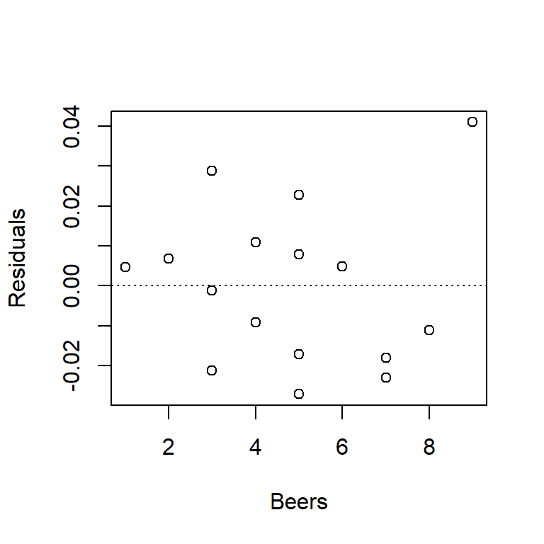
- Residuals vs. predictor. We can use this plot to check for non-linear trends. If we see a non-linear trend, like a hump-shaped pattern, it might suggest that the true relationship between predictor and response is actually non-linear.
For the BAC data, you’ll note that the plot below looks exactly like the plot of residuals vs. fitted values above. This isn’t just coincidence; in fact, residuals vs. fitted values and residuals vs. predictor will always generate exactly the same patterns in SLR. (The reason is because in SLR the fitted value is just a linear function of the predictor.) We want to get in the habit of checking both types of plots, however, because when we start entertaining multiple predictor variables in multiple regression, the plots will no longer be identical.
plot(resid(fm1) ~ beer$Beers, xlab = "Beers", ylab = "Residuals")
abline(h = 0, lty = "dotted")
- Residuals vs. variables not in the model, e.g., other predictors, observer, order of observation. In the BAC data, the only other variable we have (for now at least) is the order in which the observations appear in the data set. Without knowing how the data were collected or recorded, it’s impossible to say whether this variable is meaningful. However, the plot suggests a distinctive downward trend – data points that appear early in the data set are associated with positive residuals, and data points that appear later in the data set are associated with negative residuals. What do you think might have caused this trend?
plot(resid(fm1), xlab = "Order", ylab = "Residuals")
abline(h = 0, lty = "dotted")
- An obvious way to check the normality assumption is to plot a histogram of the residuals. While this is a straightforward idea, it suffers from the fact that the shape of the histogram depends strongly on how the residuals are grouped into bins. Note how the two histograms below of the BAC residuals provide different impressions about the suitability of the normality assumption.
hist(resid(fm1), main = "Bin width = 0.01", xlab = "Residuals")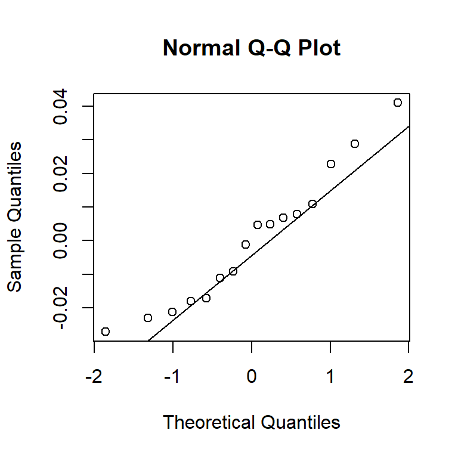
hist(resid(fm1), main = "Bin width = 0.02", xlab = "Residuals", breaks = 4)An alternative to histograms is a normal probability plot of residuals, also known as a quantile-quantile, or Q-Q, plot. Q-Q plots calculate the empirical quantile of each residual, and compare this to the theoretical quantile from a normal distribution. If the normality assumption is appropriate, the empirical and theoretical quantiles will change at the same rate, so when plotted against one another, they’ll fall on a line. If the normality assumption is not appropriate, the plot of empirical vs. theoretical quantiles will bend.
As we’ll see below, the normality assumption is the critical of the assumptions in regression. Thus, unless the Q-Q plot shows big and dramatic bends, we won’t concern ourselves with small bumps and wiggles. The Q-Q plot for the BAC data below doesn’t seem terribly problematic.
qqnorm(resid(fm1))
qqline(resid(fm1))
1.7 Consequences of violating model assumptions, and possible fixes
- Linearity
When the linearity assumption is violated, the model has little worth. What’s the point of fitting a linear model to data when the relationship between predictor and response is clearly not linear?
The best fix is to fit a non-linear model using non-linear regression. (We will discuss non-linear regression later.) A second-best option is to transform the predictor and / or the response to make the relationship linear.
- Independence
Inference about regression parameters using naive standard errors is not trustworthy when errors are correlated (there is more uncertainty in the estimates than the naive standard errors suggest).
The most common source of non-independence is either temporal or spatial structure in the data. Arguably, we have seen this with the BAC data, where one way to think about the downward trend of residuals vs. the order of observation is that residuals close together in time tend to be positively correlated. The best, and easiest, way to accommodate this type of dependence is to include (an)other predictor(s) in the model for time or space. A second-best solution is to use specific methods for time-series data or spatial data, which doable, but is fairly involved, and will require considerable additional study.
- Constant variance
Like violations of the independence assumption, violations of the constant-variance assumption cause inference about regression parameters is not trustworthy. Non-constant variance causes there to be more uncertainty in the parameters estimates than the default CIs or \(t\)-tests suggest.
There are two possible fixes for non-constant variance. If the non-constant variance arises because the response variable has a known, non-normal distribution, then one can use generalized linear models (such as logistic regression for binary data, or Poisson regression for count data). We will touch on generalized linear models briefly at the end of ST 512. Alternatively, if there is no obvious alternative distribution for the response, the usual approach is to transform the response variable to “stabilize” the variance.
For better or worse, there used to be a bit of a cottage industry in statistics in developing variance-stabilizing transformations. Remember that transformations come with a cost of diminished interpretability, and be wary of exotic transformations. It is not uncommon to observe data where the variance increases as the mean response increases. Good transformations for this situation are either a log transformation or a square-root transformation.5 Another common non-constant variance problem arises when the response is a percentage or a proportion. In this case, the standard and appropriate transformation is the arcsin-square root transformation, i.e., if the observed response is 10%, the transformed response is \(\sin^{-1}(\sqrt{.1})=0.322\).
- Normality
Perhaps surprisingly, the consequences of violating the normality assuption are minimal, unless departures from normality are severe (e.g., binary data). When one encounters decidedly non-normal data, the usual remedy is to entertain a so-called generalized linear models, i.e., logistic regression for binary data; Poisson regression for count data.
Example: Box office take (in millions of US$) vs. a composite rating score from critics’ reviews:
movie <- read.table("data/movie.txt", head = T, stringsAsFactors = T)
with(movie, plot(BoxOffice ~ Score, xlab = "Average rating", ylab = "Box office take"))
fm1 <- lm(BoxOffice ~ Score, data = movie)
abline(fm1)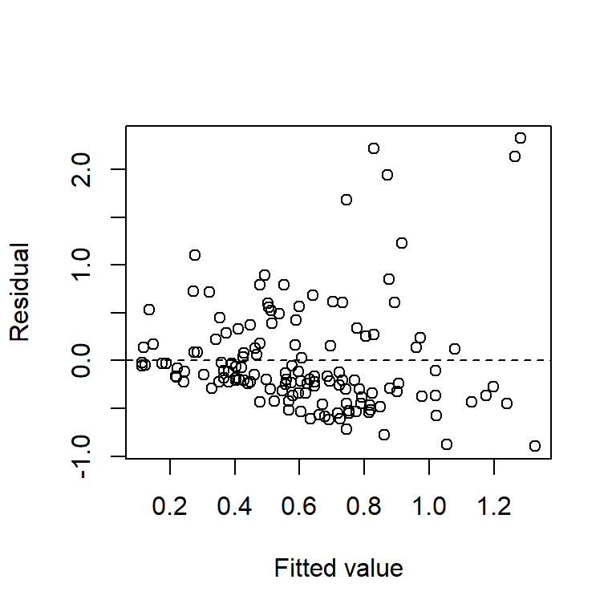
The plots of residuals vs. fitted value show clear evidence of non-constant variance. The Q-Q plot indicates right-skew. Taking a square-root transformation of the response stabilizes the variance nicely:
plot(resid(fm1) ~ fitted(fm1), xlab = "Fitted value", ylab = "Residual")
abline(h = 0,lty = "dashed")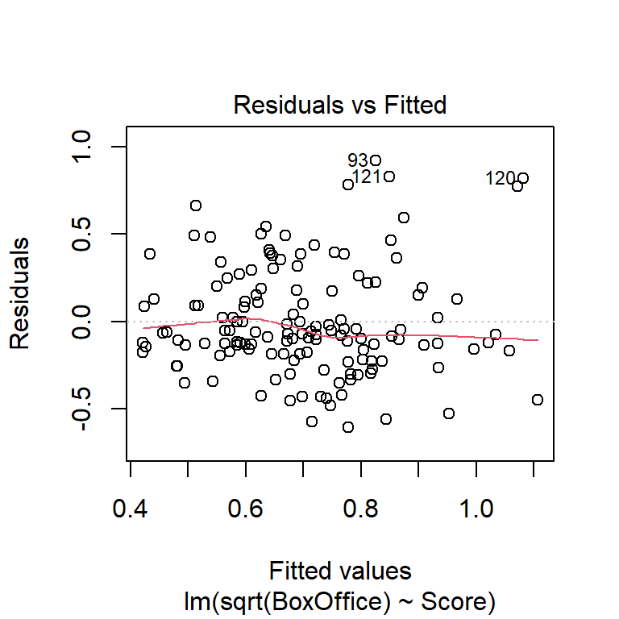
qqnorm(resid(fm1),main = "QQ plot, movie data")
qqline(resid(fm1))Let’s try a square-root transformation of the response:
fm2 <- lm(sqrt(BoxOffice) ~ Score, data = movie)
summary(fm2)##
## Call:
## lm(formula = sqrt(BoxOffice) ~ Score, data = movie)
##
## Residuals:
## Min 1Q Median 3Q Max
## -0.60533 -0.17889 -0.07339 0.17983 0.92065
##
## Coefficients:
## Estimate Std. Error t value Pr(>|t|)
## (Intercept) 0.114102 0.106000 1.076 0.284
## Score 0.010497 0.001834 5.722 6.27e-08 ***
## ---
## Signif. codes: 0 '***' 0.001 '**' 0.01 '*' 0.05 '.' 0.1 ' ' 1
##
## Residual standard error: 0.3109 on 138 degrees of freedom
## Multiple R-squared: 0.1918, Adjusted R-squared: 0.1859
## F-statistic: 32.74 on 1 and 138 DF, p-value: 6.272e-08plot(fm2)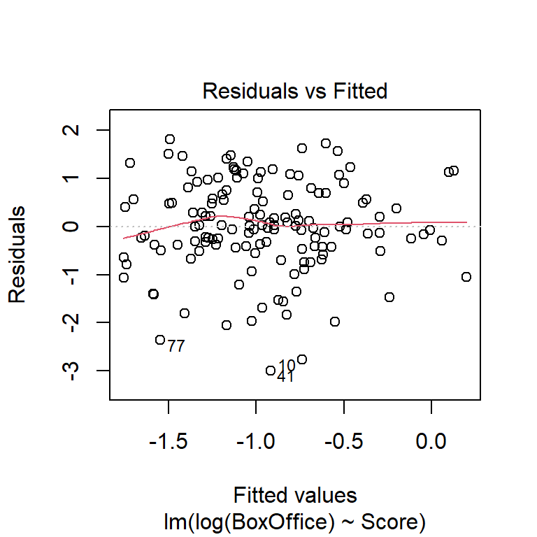 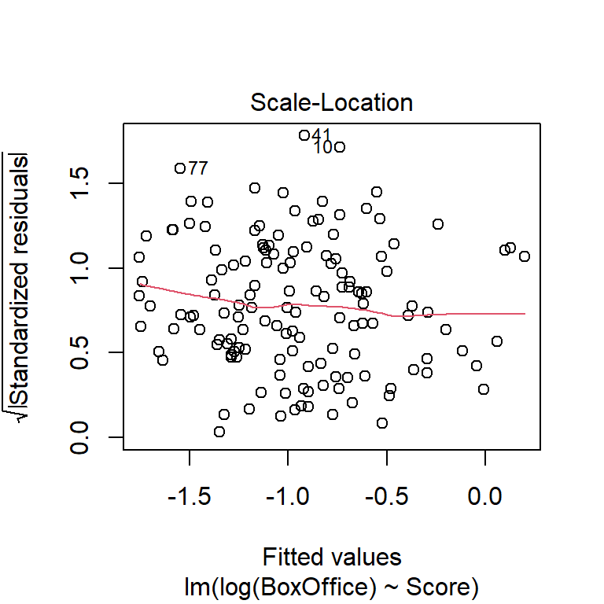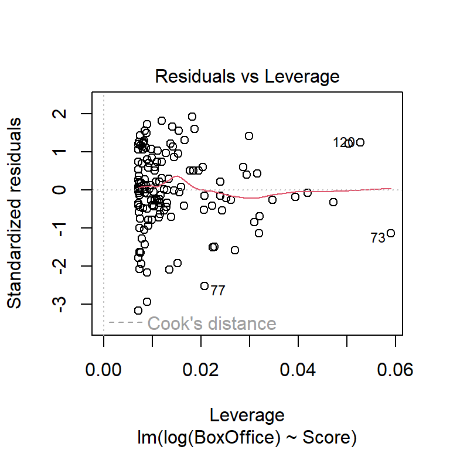
Another commonly used transformation for right-skewed data is the log transformation. Here are residual plots and model output for log-transformed data:
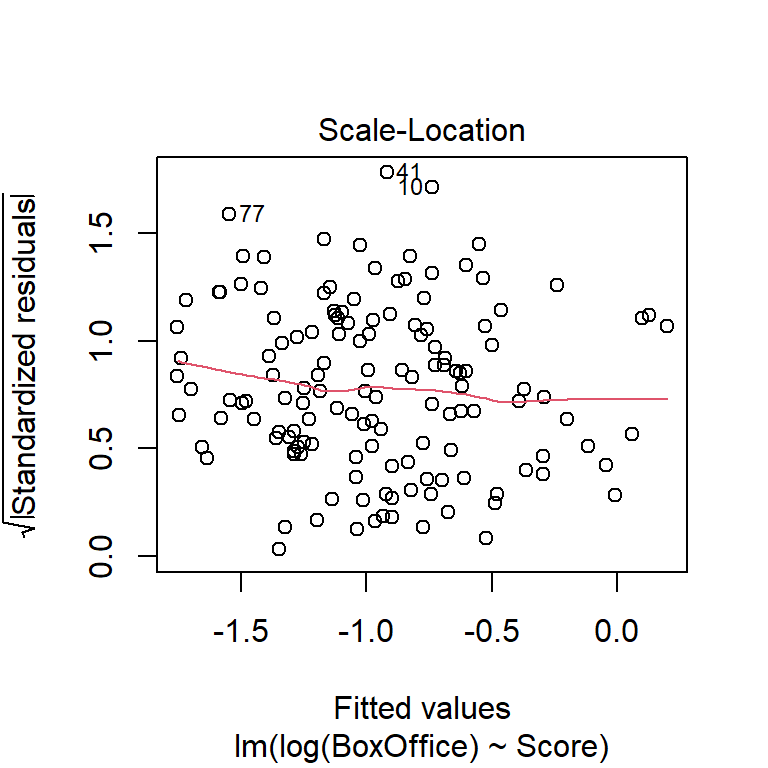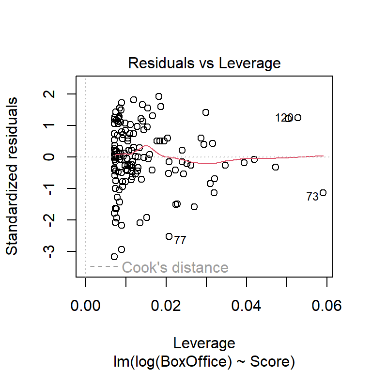
Another commonly used transformation for right-skewed data is the log transformation. Here are residual plots and model output for log-transformed data:
fm3 <- lm(log(BoxOffice) ~ Score, data = movie)
summary(fm3)##
## Call:
## lm(formula = log(BoxOffice) ~ Score, data = movie)
##
## Residuals:
## Min 1Q Median 3Q Max
## -2.99268 -0.43135 0.00783 0.67263 1.81413
##
## Coefficients:
## Estimate Std. Error t value Pr(>|t|)
## (Intercept) -2.634451 0.323390 -8.146 2.01e-13 ***
## Score 0.029984 0.005596 5.358 3.44e-07 ***
## ---
## Signif. codes: 0 '***' 0.001 '**' 0.01 '*' 0.05 '.' 0.1 ' ' 1
##
## Residual standard error: 0.9484 on 138 degrees of freedom
## Multiple R-squared: 0.1722, Adjusted R-squared: 0.1662
## F-statistic: 28.71 on 1 and 138 DF, p-value: 3.438e-07plot(fm3)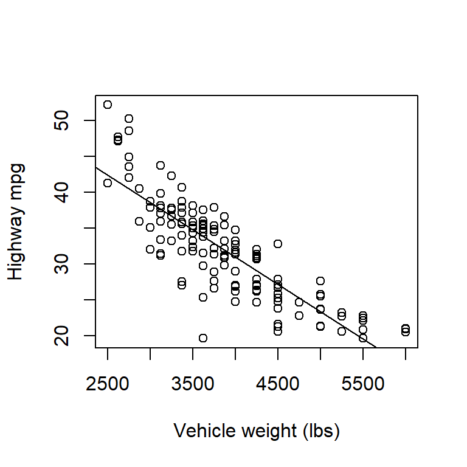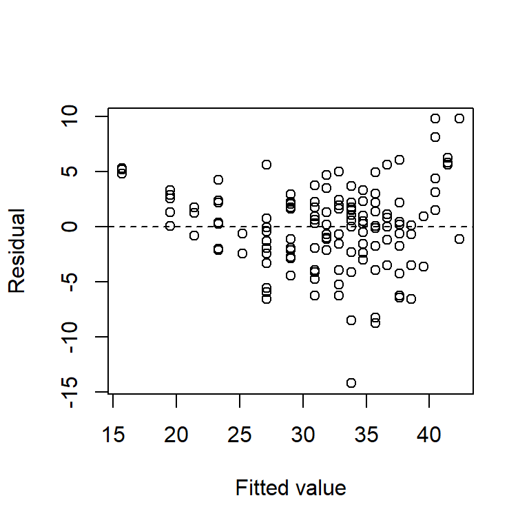

Which transformation do you think is more appropriate? Do the different transformations lead to different qualitative conclusions regarding the statistical significance of the relationship between reviewer rating and box office take?
Example 2: Highway fuel efficiency (in mpg) vs. vehicle weight for 1999 model cars:
cars <- read.table("data/cars.txt", head = T)
with(cars, plot(mpghw ~ weight, xlab = "Vehicle weight (lbs)", ylab = "Highway mpg"))
fm1 <- lm(mpghw ~ weight, data = cars)
abline(fm1)
plot(resid(fm1) ~ fitted(fm1), xlab = "Fitted value", ylab = "Residual")
abline(h = 0,lty = "dashed")
The relationship between highway mpg and vehicle weight is clearly non-linear, although that is seen most clearly from the plot of residuals vs. fitted values. We will discuss modeling non-linear relationships later.
Here are some additional comments:
What about outliers? The famous statistician George Box was fond of saying that outliers can be the most informative points in the data set. If you have an outlier, try to figure out why that point is an outlier. Discard outliers only if a good reason exists for doing so – resist the temptation to ``scrub’’ your data. Doing so is tantamount to cheating. If you absolutely must remove an outlier, at least report the model fits both with and without the outliers included.
Be particularly wary of data points associated with extreme \(x\)-values. These points can be unduly influential. (See discussion in the multiple-regression installment of the notes on leverage, standardized residuals, and Cook’s distance.)
What about transforming the \(x\)-variable? Remember that there are no assumptions about the distribution of the \(x\)-variable. However, transformations of the \(x\)-variable can also make non-linear relationships into linear ones. Remember though that transformations tend to lessen interpretability.
Don’t extrapolate the regression line beyond the range of the \(x\)-variable observed in the data. Remember that statistical models are only valid to the extent that data exist to support them.
Although it’s often overlooked, remember that the standard regression model also assumes that the predictor is measured without error. If there’s error in the predictor as well as the response, then the estimated slope will be biased towards 0. If the error in the predictor is comparable to the error in the response, then consider a regression model that allows for variability in the predictor. These models go by multiple names, but they are most often called ``Model II regression’’.
1.8 Prediction with regression models
Consider a new value of the predictor \(x^\star\). There are two different types of predictions we could make:
What is the average response of the population at \(x^\star\)?
What is the value of a single future observation at \(x^\star\)?
Point estimates (i.e., single best guesses) are the same for both predictions. They are found by simply plugging \(x^\star\) into the fitted regression equation.
Example. Suppose every grad student at NCSU drinks 2.5 beers. What do we predict the average BAC of this population to be? \[\begin{align*} \hat{y}^\star & = \widehat{\beta }_{0} +\widehat{\beta }_{1} x^\star \\ & = -0.013 + 0.018 \times 2.5\\ & = 0.032 \end{align*}\]
Suppose Danny drinks 2.5 beers. What do we predict Danny’s BAC to be? \[ \hat{y}^\star = 0.032 \]
However, the uncertainty in these two predictions is different. Predictions of single future observations are more uncertain than predictions of population averages (why?).
We quantify the uncertainty in prediction 1 with a confidence interval. We quantify the uncertainty in prediction 2 with a prediction interval. A prediction interval (PI) is just like a confidence interval in the sense that you get to choose the coverage level. i.e., a 95% prediction interval will contain a single new prediction 95% of the time, while a 99% prediction interval will contain a single new prediction 99% of the time. All else being equal, a 99% prediction interval will be wider than a 95% prediction interval.
Both confidence intervals and prediction intervals follow the same general prescription of \[ \mbox{estimate} \pm \mbox{critical value} \times \mbox{standard error} \] Both also use the same point estimate, \(\hat{y}^\star\), and the same critical value (taken from a \(t\)-distribution with \(n-2\) df). However, the standard errors differ depending on whether we are predicting an average response or a single future observation. If you find formulas helpful, you might derive some insight from the formulas for these two standard errors. For an average population response, the standard error is \[ s_{\varepsilon} \sqrt{\frac{1}{n} +\frac{\left(x^\star -\bar{x}\right)^{2} }{S_{xx} } } \] while for a single future observation, the standard error is \[ s_{\varepsilon} \sqrt{1+\frac{1}{n} +\frac{\left(x^\star -\bar{x}\right)^{2} }{S_{xx} } } \]
Thus, the width of a CI or PI depends on the following:
The function can be used to calculate these intervals in R:Regression (solid line), 95% confidence intervals (dashed lines), and 95% prediction intervals (dotted lines) for the beer data. Note that both confidence and prediction intervals widen near the edges of the range of the predictor.
Regression models can be used both for observational and experimental data. In some experiments, the experimenter has control over the values of the predictor included in the experiment. Gotelli & Ellison (, pp. 167-9) give the following guidelines for a regression design with a single predictor:
Once the values of the predictor to be included in the experiment have been chosen, these values should be randomly assigned to the experimental units. Note that randomization does require randomly choosing the values of the predictor to be included in the experiment!
Bibliography
This convention is so common that one often hears the horizontal axis referred to as the \(x\)-axis and the vertical axis referred to as the \(y\)-axis. If we wanted to be exceedingly careful we should only refer to the axes in this way when the variables that they show are in fact \(x\) and \(y\), but few outside of mathematics find such care necessary.↩︎
More precisely, the least-squares estimates of the intercept and slope are the maximum likelihood estimates, when we assume that the errors take a Gaussian distribution. Maximum likelihood is beyond the scope of ST 512.↩︎
A note on terminology: It is conventional to refer to a regression model as a regression of the response on, versus, or against the predictor. Thus, the BAC model could be described as a regression of BAC on the number of beers consumed, or alternatively as a regression of BAC against the number of beers consumed.↩︎
Note that a log transformation will not work if the data contain response values equal to 0. The usual approach in this case is either to take the \(\ln(y + 1)\), or to take \(\ln(y + c)\), where \(c\) is one-half of the smallest non-zero response value in the data set. Note also that the base of the logarithm doesn’t matter when taking a log transformation. Natural log is the most common choice, but one can also use \(\log_2\) or \(\log_{10}\).↩︎